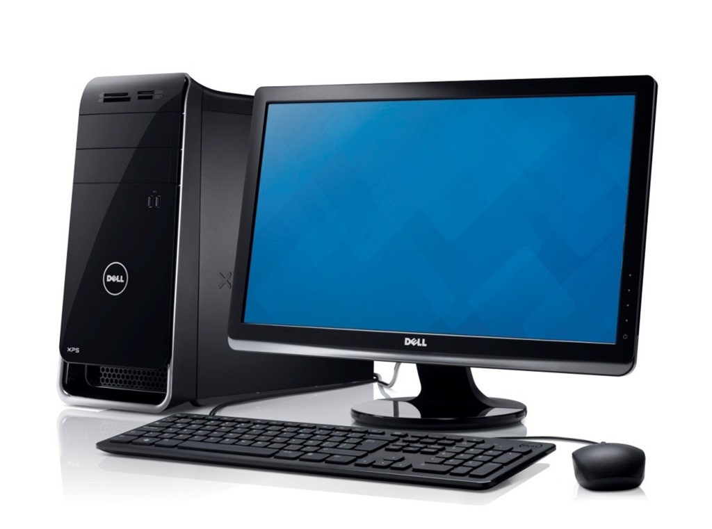
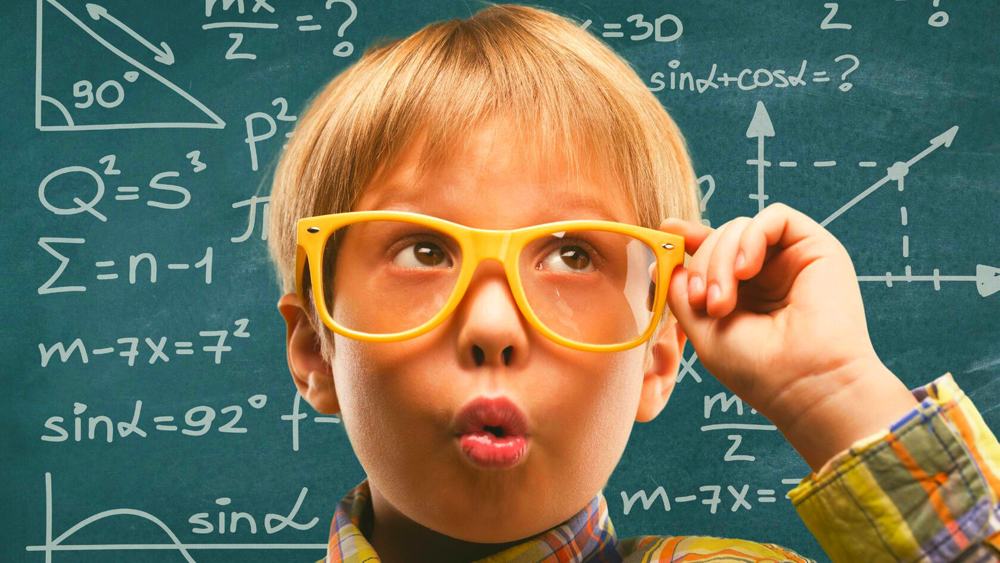

Информатика и как стать программистомЧто вообще такое информатика?Информатика - предмет в школе, наука о компьютере, программирование, и т.д., но всё равно вообщем это связано с компьютером и о том, как на нём работать Как стать программистом?Первое, что должно быть для того, чтобы стать программистом это хотелка к твоей цели. Второе это знание таких предметов как:
Сбоку есть остальные два предмета: Математика и Английский. В этих разделах написано как стать рабочим в этой сфере.  |